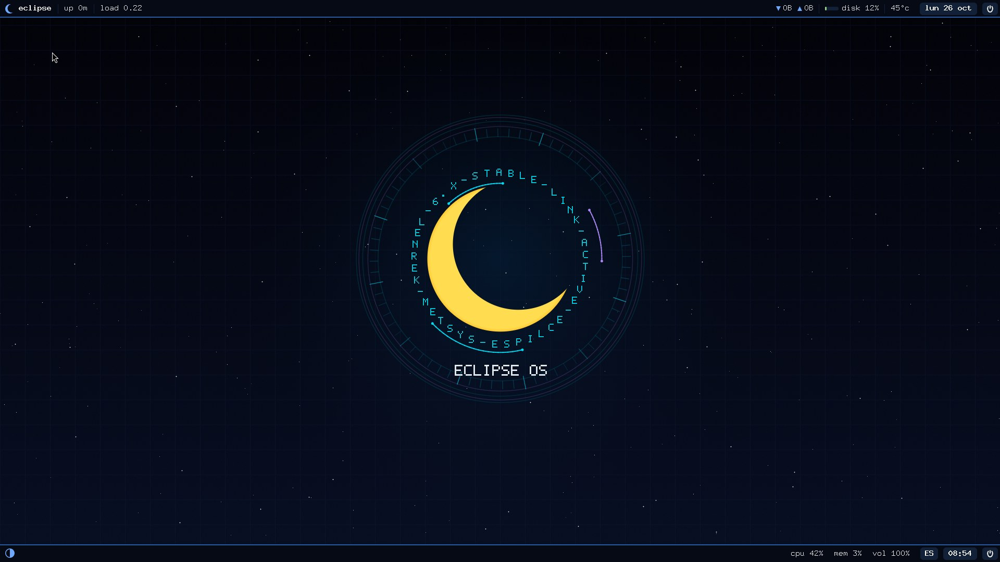
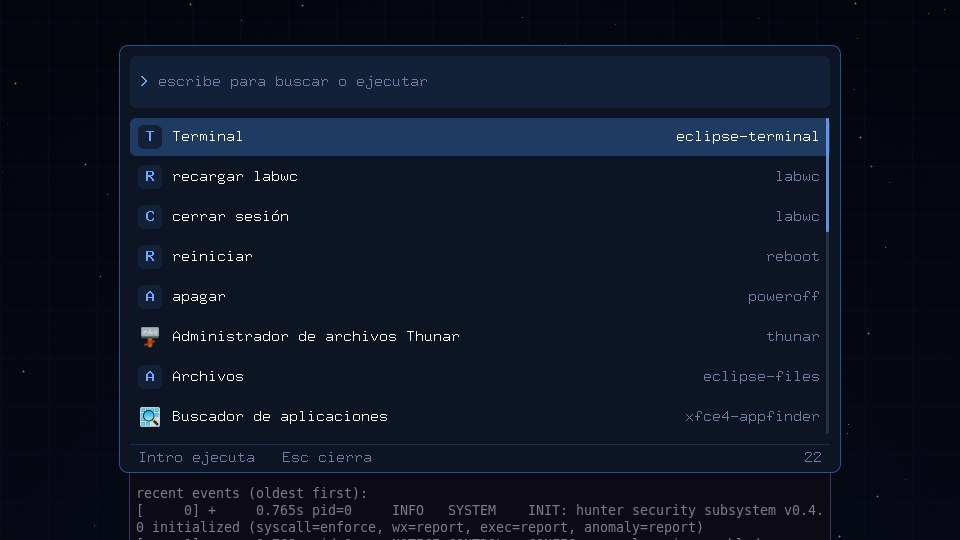
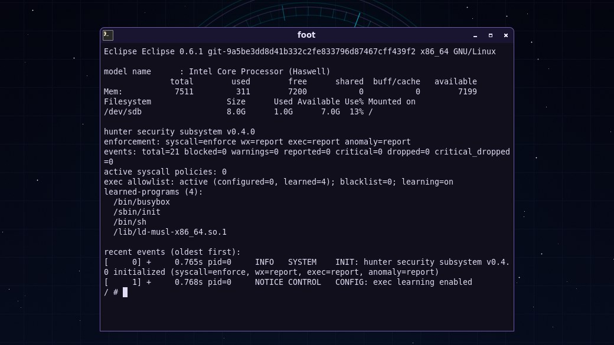
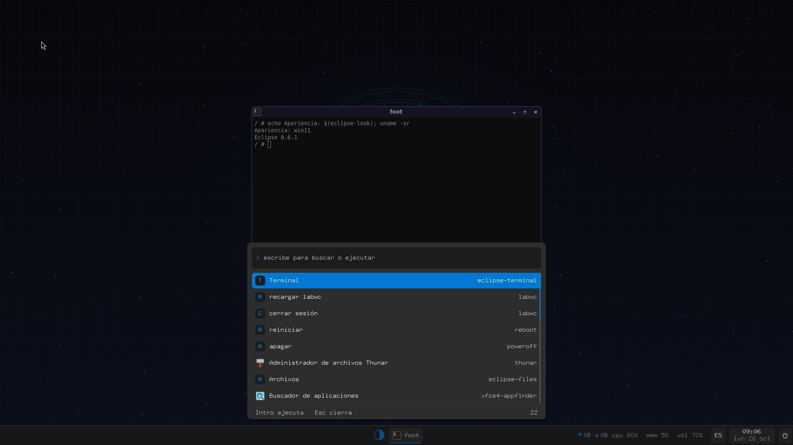
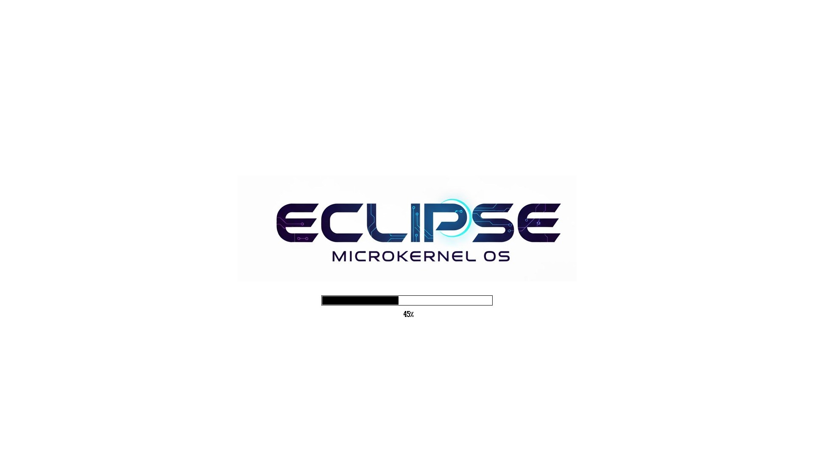

🦀
Seguro por diseño
El núcleo está escrito en Rust: sin desbordamientos de búfer ni punteros colgantes en el corazón del sistema. Es una reimplementación del micronúcleo Zircon.
Un núcleo propio escrito en Rust seguro que habla el idioma de Linux. Ejecuta tus programas sin recompilarlos y te recibe con un escritorio diseñado desde cero.

Captura real de Eclipse OS funcionando en QEMU.
Un micronúcleo moderno que no te obliga a renunciar al software de siempre.
El núcleo está escrito en Rust: sin desbordamientos de búfer ni punteros colgantes en el corazón del sistema. Es una reimplementación del micronúcleo Zircon.
Implementa las llamadas al sistema de Linux siguiendo su propia documentación: BusyBox, Mesa, foot o labwc, compilados para Linux, funcionan tal cual.
Sesión Wayland con labwc y piezas nativas: el fondo animado lunarbg, el panel lunarbar y un lanzador rápido.
hunter vive dentro del núcleo: aplica políticas tipo LSM, vigila W^X y detecta comportamientos anómalos.
Cada etapa del arranque se cronometra, del firmware a eclipse-init. Lo que no se mide no se mejora.
Drivers propios de AHCI, NVMe, e1000e, USB y sonido; gráficos DRM/KMS y un instalador que lo deja en tu disco.
Capturas reales de la ISO oficial 0.6.1 arrancada en QEMU. Elige una pestaña.




El fondo lunarbg dibuja en tiempo real la media luna dorada, los anillos que giran y las estrellas. Arriba, el panel con red, disco, temperatura y fecha. Abajo, tareas, CPU, memoria y volumen.
Pulsa Alt+Espacio, escribe y ejecuta. Aplicaciones, ajustes, reinicio y apagado en el mismo sitio, en español.
uname dice Eclipse, la raíz vive en EclipseFS, su propio sistema de archivos, y /proc/hunter cuenta en directo lo que vigila el núcleo.
Con eclipse-look kde el panel y el lanzador adoptan los colores Breeze de Plasma. Las piezas son las mismas, solo cambia la piel.
eclipse-look win11 centra la barra de tareas y convierte el lanzador en un menú Inicio translúcido.
El cargador rboot pinta el logo y la primera mitad de la barra; el núcleo la completa. Cada tramo queda cronometrado.
Un núcleo propio abajo y el software de Linux arriba, capa a capa.
Basta con una máquina virtual. Si te gusta, el instalador lo deja en tu disco.
Elige escritorio o mínima, para x86_64 o arm64, en la página de versiones.
eclipse-desktop-x86_64.iso.gz
Necesita firmware UEFI (OVMF) y al menos 4 GB de memoria.
gunzip eclipse-desktop-x86_64.iso.gz qemu-system-x86_64 -machine q35 \ -m 8G -smp 4 -vga virtio \ -drive if=pflash,format=raw,readonly=on,file=OVMF.fd \ -cdrom eclipse-desktop-x86_64.iso
Desde la consola del medio live, el instalador guía el resto.
# con un disco SATA o NVMe conectado
install-eclipse
Todo el sistema, del núcleo al escritorio, sale de un solo repositorio.